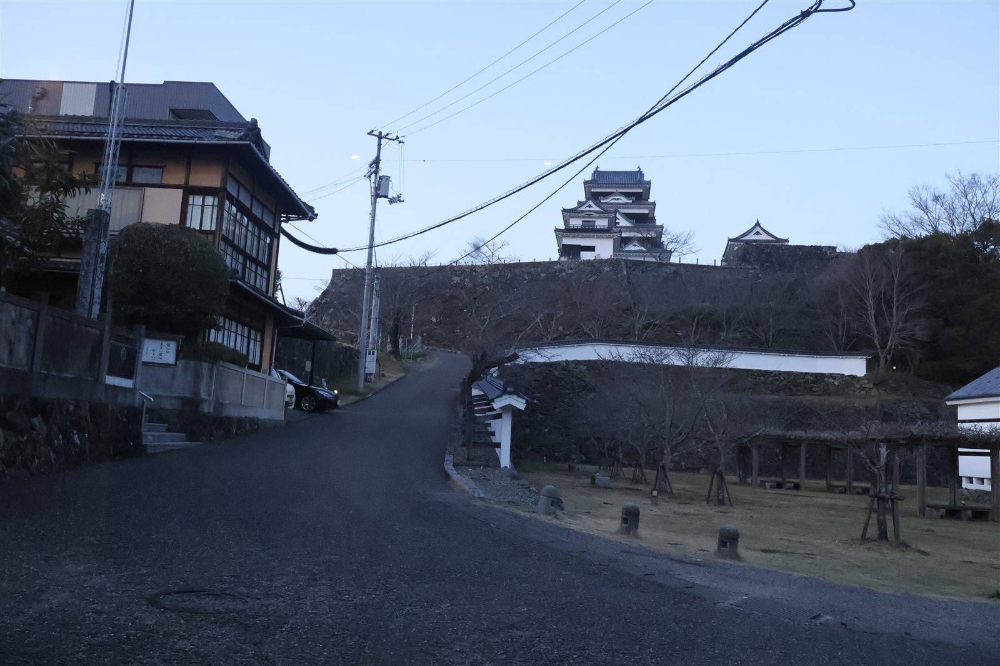

大洲の視点 ・ 出典: 東京都立大学大学院 修士論文（2023年） ・ 約5分で読める

要点
以前「空き家率19.2％の衝撃」という記事を書いたが、その空き家をどうやって実際に活用まで持っていくのか、 具体的な仕組みを知る機会があった。
大洲市の官民連携まちづくりを分析した修士論文（東京都立大学大学院・手塚真人氏、2023年３月）によると、 2016年頃、大洲の旧城下町エリアの町並みと景観は「崩壊寸前の危機的状況」にあったという。
かなり強い表現だが、それだけ切実だったということなんだろう。
その状況に対して2017年４月、地域の若者を中心にＮＰＯ法人「YATSUGI（やつぎ）」が結成された （同年９月に法人認証）。
町家や古民家の清掃、空気の入れ替え、障子の張り替えといった、すぐにできる簡単な修繕活動を していたそうだ。
空き家の所有者の多くは首都圏や関西など他地域に住んでいて、頻繁に維持管理に来られない。
そこにYATSUGIが関わることで、建物の傷みの進行を遅らせつつ、所有者との関係づくりにもつながったという。
所有者への聞き取りで分かったのは、「歴史ある建物を残したい気持ちはあるが、維持管理が大変で、活用の仕方も分からず、相談先も分からないから、取り壊しを検討している」という本音だったそうだ。
これはきっと、大洲に限らず全国の空き家所有者に共通する悩みだと思う。
合意形成を後押ししたもう一つの仕組みが、「サブリース（転貸）」という手法。
歴史的建築物の活用を担う（株）KITAは、手がけた34棟のうち約半分を所有者から購入し、 残り半分はこのサブリース方式で、所有者と10～15年の定期借地権の契約を結び、その借りた 権利をさらに活用事業者へ貸しているという。
この方法だと、維持管理費や固定資産税の支払いに苦しんでいた所有者は、その負担から解放されるだけでなく、 10～15年後には改装された建物を取り戻すこともできる。
「今すぐ売る」でも「自分でずっと管理する」でもない、第三の選択肢があることが、合意形成に大きく 貢献したとの考察だった。
改修技術の話も興味深かった。2018年当時、大洲には古民家改修を手がける設計事務所や工務店がなかったため、 松山市の設計事務所や地元工務店を、兵庫県丹波篠山で長年古民家改修を手がけてきた専門家のもとへ研修に 送り、技術を習得してもらったという。
ちなみにこの松山の設計事務所は、前職で愛媛県八幡浜市の日土小学校 （戦後の木造建築として初めて重要文化財に指定された名建築）の修復に関わった経歴を持つとのこと。
大洲の古民家再生の裏に、県内の別の文化財保存の経験がつながっていたというのは、ちょっとした発見だった。
（株）KITAでは今も毎年「町家活用改修事業研修」を開いて、技術を地域の工務店に伝承し続けているそうだ。
「空き家問題」というと制度や補助金の話になりがちだけど、実際に城下町を動かしたのは、 次の３つの具体的な行動だったんだと分かる。
大きな計画より先に、まず人が動いていたという順番が印象に残った。
ここまで読むと、うまくいった話ばかりのように見えるかもしれないが、実際にはかなり泥臭い交渉の積み重ねだったようだ。
空き家再生の事業化プロセスを取材した別の記事によると、資金面では「NIPPONIA HOTEL 大洲 城下町」という、複数の古民家を離れた場所に分散させたまま１つのホテルとして運営する「分散型ホテル」の開業にあたり、13億円という巨額の投資を、無担保・無保証で融資してもらう交渉に成功したのだという。
地方の空き家再生でこの規模の融資を無担保で引き出すのは、簡単なことではないはずだ。
現場レベルの苦労も生々しい。空き家の所有者が複数の相続人にまたがっていて、全員の合意を取り付けるだけで時間がかかるケース、所有者本人が認知症になってしまい、そもそも契約行為自体ができなくなってしまうケースもあったという。
建物の側でも、長屋のうち１室だけ所有者が違うために、室内に新しく境界の壁を作って、残りの部分だけを借り受けるといった、法律と現場の間を縫うような物理的な工夫も必要になる。
建築基準法や消防法といった法規制への対応も一筋縄ではいかなかったようで、「若者たちが動いて、サブリースで貸し借りする」という仕組みの美しさの裏には、こうした地道な調整の積み重ねがあった、ということのようだ。
なお、サブリースの具体的な賃料水準までは、今回の調査で確認できる公開資料の範囲では分からなかった。
YATSUGIは今もあるのか、2026年８月時点で改めて調べ直してみた。
まず法人としての存続について。内閣府の「ＮＰＯ法人ポータルサイト」には今もYATSUGIの登録ページが 存在していて、解散した法人の一覧にも名前は見当たらなかった。少なくとも法人格が消えているわけでは なさそうだ。
もう一つ、YATSUGIを生んだ母体である一般社団法人キタ・マネジメントの公式サイトを見てみると、「古民家再生 #YATSUGI - 地域の若者たちのクリエイティブな活動から始まった大洲のまちづくり」という一文が、2026年８月時点でも掲載されている。
サイト自体も直近まで更新が続いていて（2026年７月１日に「令和７年度実績報告」を公開、７月17日にも新しいお知らせを掲載）、YATSUGIは今も大洲のまちづくりの「原点」として、現在進行形で語られている団体のようだ。
ただし、YATSUGI単独の直近の活動報告（会員数や個別イベントの開催状況など）までは、今回の調査では見つけられなかった。
今の主な担い手は、YATSUGIから発展した（株）KITAや一般社団法人キタ・マネジメントに移っている面もありそうで、YATSUGIという名前と発想は生き続けているものの、組織単体としての今の活動規模までは正直よく分からなかった、というのが今回調べた範囲での正確なところだと思う。
東京都立大学大学院修士論文（手塚真人、2023年３月、非公開のため個別リンクなし）
YATSUGI（内閣府 ＮＰＯ法人ポータルサイト） 一般社団法人キタ・マネジメント公式サイト（YATSUGIの記載・最新更新の確認） 綺麗事では進まない、空き家再生のリアル。愛媛県大洲市はいかにして事業化させたのか【前編】（Regeneration Travel）この記事をサイトに掲載した日: 2026/08/01